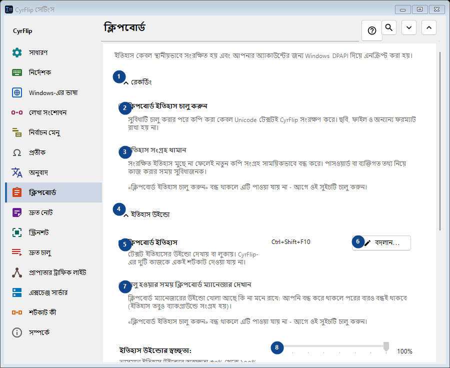
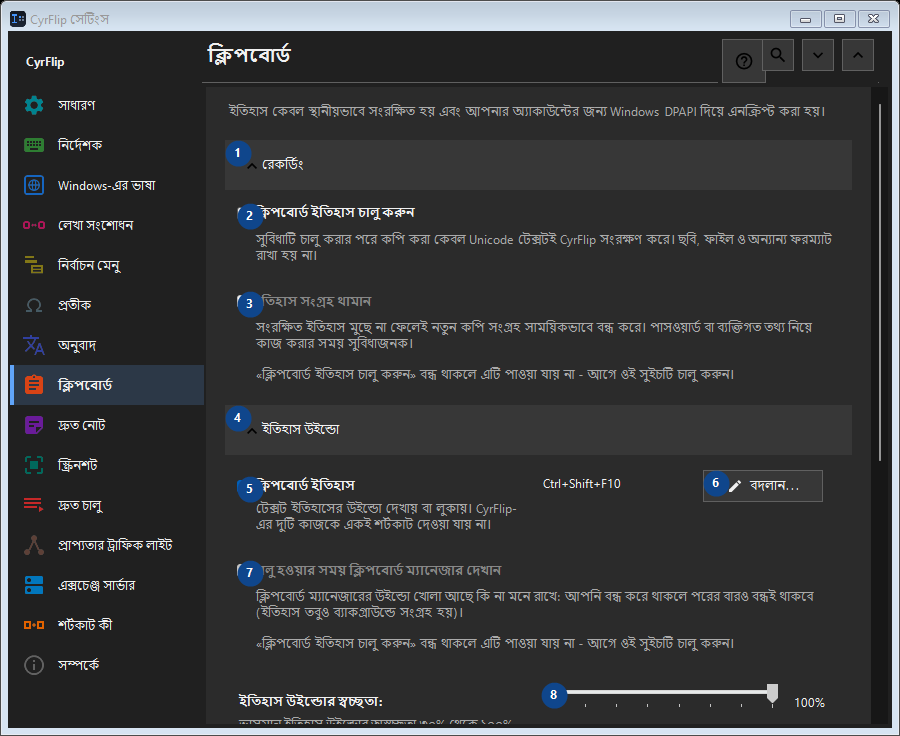

ক্লিপবোর্ড
এর কাজ
ইতিহাস কেবল স্থানীয়ভাবে সংরক্ষিত হয় এবং আপনার অ্যাকাউন্টের জন্য Windows DPAPI দিয়ে এনক্রিপ্ট করা হয়।


ব্যবহারের ক্রম
সেটিং সঙ্গে সঙ্গে প্রয়োগ হয়। নির্দিষ্ট ক্রম নেই; নিচের দলগুলি ব্যবহার করুন।
উপাদান
1. রেকর্ডিং
উল্লিখিত কাজের জন্য এই নির্দেশ ব্যবহার করুন। মেনে নেওয়ার আগে নিশ্চিতকরণ পড়ুন।
আপনার শর্টকাট2. ক্লিপবোর্ড ইতিহাস চালু করুন
সুবিধাটি চালু করার পরে কপি করা কেবল Unicode টেক্সটই CyrFlip সংরক্ষণ করে। ছবি, ফাইল ও অন্যান্য ফরম্যাট রাখা হয় না।
আপনার শর্টকাট3. ইতিহাস সংগ্রহ থামান
«ক্লিপবোর্ড ইতিহাস চালু করুন» বন্ধ থাকলে এটি পাওয়া যায় না - আগে ওই সুইচটি চালু করুন। এই উপাদান এখন উপলব্ধ নয়। আগে বৈশিষ্ট্য চালু করুন বা একটি এন্ট্রি বাছুন।
আপনার শর্টকাট4. ইতিহাস উইন্ডো
উল্লিখিত কাজের জন্য এই নির্দেশ ব্যবহার করুন। মেনে নেওয়ার আগে নিশ্চিতকরণ পড়ুন।
আপনার শর্টকাট5. ক্লিপবোর্ড ইতিহাস
টেক্সট ইতিহাসের উইন্ডো দেখায় বা লুকায়। CyrFlip-এর দুটি কাজকে একই শর্টকাট দেওয়া যায় না।
আপনার শর্টকাট6. বদলান - ক্লিপবোর্ড ইতিহাস
উল্লিখিত কাজের জন্য এই নির্দেশ ব্যবহার করুন। মেনে নেওয়ার আগে নিশ্চিতকরণ পড়ুন।
আপনার শর্টকাট7. চালু হওয়ার সময় ক্লিপবোর্ড ম্যানেজার দেখান
«ক্লিপবোর্ড ইতিহাস চালু করুন» বন্ধ থাকলে এটি পাওয়া যায় না - আগে ওই সুইচটি চালু করুন। এই উপাদান এখন উপলব্ধ নয়। আগে বৈশিষ্ট্য চালু করুন বা একটি এন্ট্রি বাছুন।
আপনার শর্টকাট8. ইতিহাস উইন্ডোর স্বচ্ছতা
«ক্লিপবোর্ড ইতিহাস চালু করুন» বন্ধ থাকলে এটি পাওয়া যায় না - আগে ওই সুইচটি চালু করুন। এই উপাদান এখন উপলব্ধ নয়। আগে বৈশিষ্ট্য চালু করুন বা একটি এন্ট্রি বাছুন।
আপনার শর্টকাট9. ইতিহাসে খুঁজুন
লেখার অংশ দিয়ে খোঁজার জন্য আলাদা উইন্ডো খোলে। খুঁজতে অন্তত তিনটি অক্ষর লিখুন।
আপনার শর্টকাট10. মুছে ফেলা
উল্লিখিত কাজের জন্য এই নির্দেশ ব্যবহার করুন। মেনে নেওয়ার আগে নিশ্চিতকরণ পড়ুন।
আপনার শর্টকাট11. সম্পূর্ণ ইতিহাস মুছুন
মেমরি ও এনক্রিপ্ট করা স্থানীয় ফাইল থেকে সব এন্ট্রি মুছে ফেলে। এটি ফেরানো যায় না।
আপনার শর্টকাট12. অন্য কম্পিউটারে স্থানান্তর
উল্লিখিত কাজের জন্য এই নির্দেশ ব্যবহার করুন। মেনে নেওয়ার আগে নিশ্চিতকরণ পড়ুন।
আপনার শর্টকাট13. রপ্তানি করুন...
আপনার নোট ও বেছে নেওয়া ক্লিপবোর্ড ইতিহাস নিয়ে একটি খোলা টেক্সট ফাইল: যেকোনো এডিটরে বা ফোনে পড়া যায় এবং অন্য কম্পিউটারে CyrFlip-এ আমদানি করা যায়। ফাইলটি এনক্রিপ্ট করা হয় না। আমদানি দেখায় কী যোগ হবে এবং কিছুই মোছে না।
আপনার শর্টকাট14. আমদানি করুন...
উল্লিখিত কাজের জন্য এই নির্দেশ ব্যবহার করুন। মেনে নেওয়ার আগে নিশ্চিতকরণ পড়ুন।
আপনার শর্টকাট